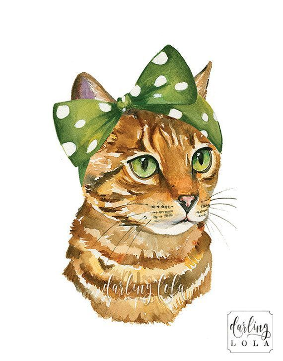
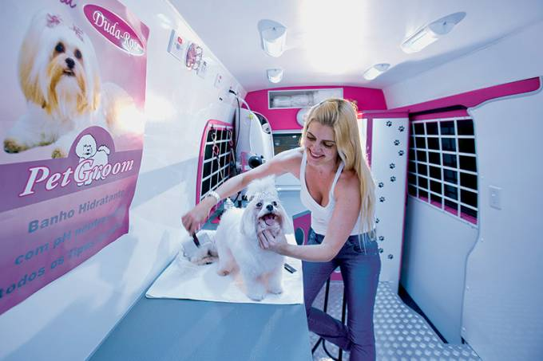

Somos a maior loja de petshop de São Paulo, líder há mais de 40 anos, passando de geração em geração. Fundada no ano de 1978, a Catioros.inc trouxe modernidade já naquela época, quando utilizava ferro de passar para fazer os penteados mais mirabolantes e elegantes. Tudo a gosto do cliente.
Possuímos um petshop sobre rodas, o Lavadog Móvel, para que você não precise sair do conforto da sua casa!
